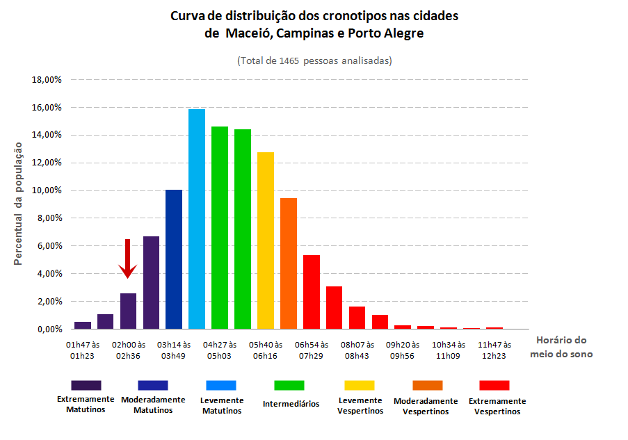

Versão Beta (0.5)
Seu cronotipo se encaixa no modelo Extremamente Matutino.
As pessoas com esse cronotipo raramente sentem sono durante o dia e têm extrema dificuldade a se manterem acordadas até mais tarde da noite. Quando são desafiadas a ficarem acordadas, ao contrário do que se espera de seu cronotipo, elas não dormem até mais tarde no dia seguinte e voltam a despertar logo pela manhã no horário habitual. Isso se dá pois seu organismo regula o início e o fim do episódio de sono muito mais cedo que o da população em geral. Grande parte das pessoas idosas apresenta este cronotipo.
A avaliação do seu cronotipo reflete como o seu organismo é regulado temporalmente ao longo das 24h do dia. Este tipo de regulação fisiológica do organismo é em parte herdada geneticamente e reflete em parte um ajuste temporal aos sinais ambientais como o ciclo dia/noite.

(Figura A)
Para resumir os resultados recolhidos, dividimos a população em sete grupos de cronotipos (Figura A), na qual o eixo Y representa a porcentagem de pessoas de determinado cronotipo e o X o meio do sono (horário passado a metade do período do sono). As barras nas cores roxo e azul-escuro, ao lado esquerdo do gráfico, representam a quantidade de pessoas mais matutinas na população estudada, enquanto que as barras nas cores laranja e vermelho representam pessoas mais vespertinas. Os cronotipos mais comuns encontrados na população são representados pelas barras de cores azul-claro (levemente matutino), verde (intermediário) e amarelo (levemente vespertino). A altura das barras indica o percentil de pessoas em cada categoria de cronotipo.
O cronotipo é calculado a partir dos horários de sono nos dias de semana comparados com os dias livres (nos quais não há obrigação social como trabalho e estudo). O horário do “meio do sono” é obtido a fim de classificar o período em que o organismo das pessoas tende a iniciar o episódio de sono. A seta vermelha na Figura A indica onde o seu perfil reside na distribuição dos cronotipos neste estudo.